Ammatillisen verkkoprofiilin koostaminen
Tämä materiaali on suunnattu ensisijaisesti SASKYn Koodaaja-koulutuksen hakuvaiheen orientaatiokurssin taustamateriaaliksi. Tämän materiaalin avulla tulevat tutuksi muun muassa seuraavat kokonaisuudet:
- xxx
Lisenssi
Tämä teos on lisensoitu Creative Commons Nimeä 4.0 Kansainvälinen -lisenssillä.
Tarvittavat ohjelmat
Jotta voit tehdä kaikki tässä materiaalissa olevat esimerkit, tarvitset
- graafisen selaimen ja
- tekstieditorin.
Tämän materiaalin esimerkkien testaamiseen ei vaadita tehokasta konetta, johon on asennettu kaikki viimeisimmät sovelluskehityksen työkalut. Minimissään käyttöjärjestelmäsi mukana tulleet ohjelmat riittävät.
Graafinen selain
Materiaalissa tehtyjen HTML-sivujen katseluun soveltuu mikä tahansa graafinen selain. Se selain, mitä käytät aktiivisesti, käy tähän aivan mainiosti. Materiaalissa olevat esimerkkikuvat ovat Microsoftin Edge -selaimesta, mutta lopputulos näyttää pääosin samalta millä tahansa muulla selaimella.
Tekstieditori
HTML-sivujen tekemisessä yksi tärkeimmistä työkaluista on tekstieditori. Sillä muokataan HTML-kooditiedostoja ja muita tiedostoja. Periaatteessa tähän tarkoitukseen kelpaa melkein mikä tahansa tekstieditori, hätätilanteessa Windowsin Muistio (Notepad) toimii editointiin. Jotta ohjelmakoodin kirjoittaminen olisi tehokasta ja tuottavaa, kannattaa ottaa käyttöön koodaamiseen erityisesti suunniteltu tekstieditori.
Tässä materiaalissa käytetään Microsoftin Visual Studio Code -tekstieditoria, pääosin seuraavista syistä:
- Se on vapaan lähdekoodin projekti, toisin sanoen se on ilmainen.
- Sille löytyy valmiit asennuspaketit Windowsille, Linuxille ja macOS:lle.
- Se on kooltaan maltillinen ja se käynnistyy kohtuullisen nopeasti.
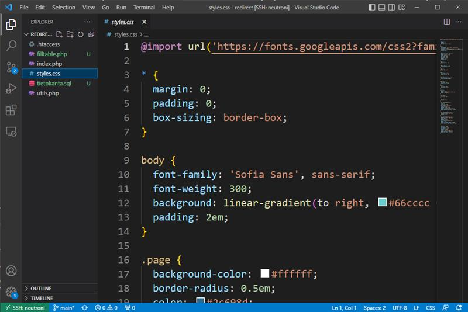
Visual Studio Coden asentaminen
Tässä ohjeessa asennetaan Visual Studio Code -tekstieditori Windows-ympäristöön. Jos asennat editoria toiselle käyttöjärjestelmälle, niin mukaile asennuksen kulkua oman käyttöjärjestelmäsi mukaisesti.
-
Mene selaimella osoitteeseen https://code.visualstudio.com.
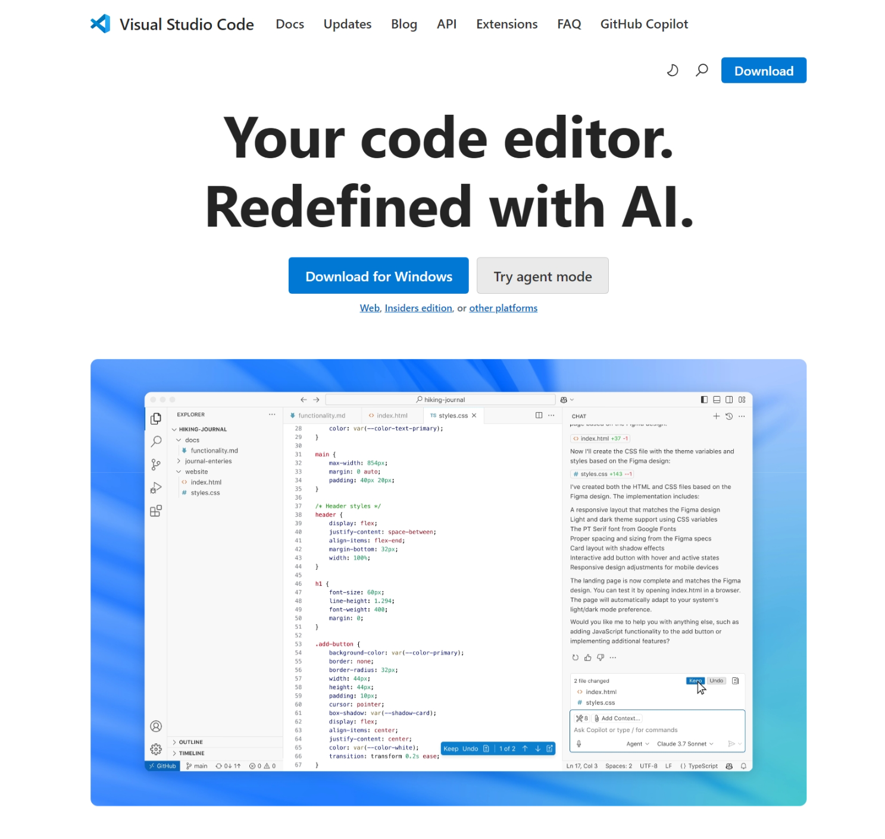
-
Klikkaa Download for Windows-nappia. Sivusto tunnistaa automaattisesti käyttämäsi käyttöjärjestelmän ja tarjoaa sitä vastaavaa asennuspakettia. Jos näin ei kuitenkaan tapahdu, niin klikkaa silloin sivun yläreunasta Download-nappia ja valitse sieltä käyttöjärjestelmääsi vastaava asennuspaketti.
-
Käynnistä lataamasi asennuspaketti tuplaklikkaamalla sitä.
-
Valitse asennuksessa käytettävä kieli (English) ja paina OK-nappia.
-
Hyväksy License Agreement -näkymässä lisenssi valitsemalla I accept the agreement ja klikkaa Next.
-
Hyväksy Select Destination Folder -näkymässä oletuksena tarjottu asennuskansio klikkaamalla Next-nappia.
-
Samoin hyväksy Select Start Menu Folder -näkymässä tarjottu käynnistysvalikon kansionimi klikkaamalla Next.
-
Valitse Select Additional Tasks-näkymässä ne valinnat, jotka haluat ottaa käyttöön. Seuraavat valinnat ovat suositeltavia:
- Add "Open with Code" action to Windows Explorer file context menu
- Add "Open with Code" action to Windows Explorer directory context menu
- Add to PATH (requires shell restart)
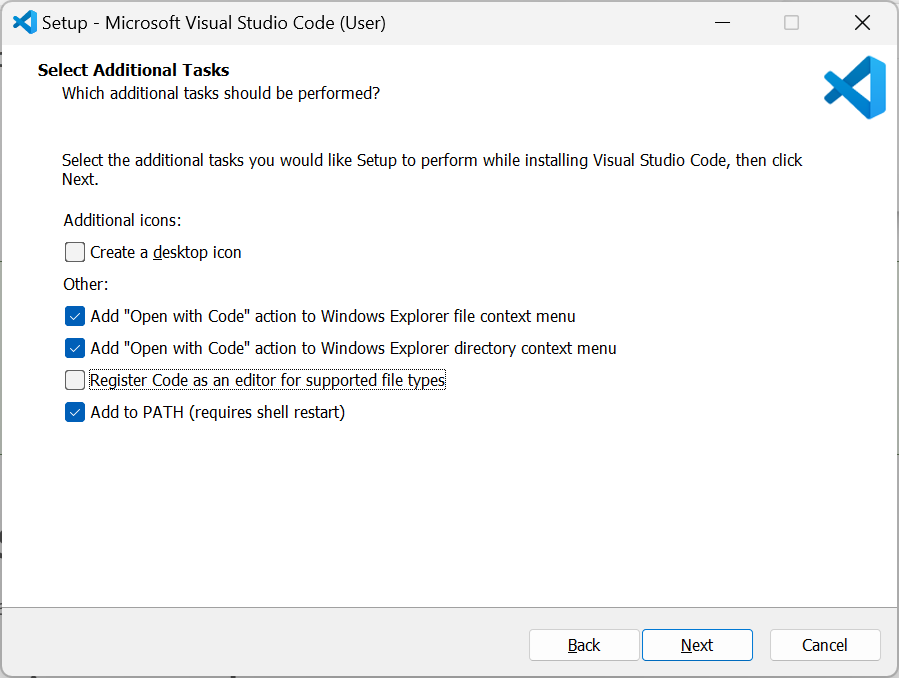
Voit valita myös kohdan Register Code as an editor for Supported file types, jos et käytä aktiivisesti jotain toista tekstieditoria koodien ja muiden tekstitiedostojen muokkaamiseen. Hyväksy tekemäsi valinnat klikkaamalla Next.
-
Käynnistä Ready to Install -näkymässä asennus klikkaamalla Install.
-
Asennusohjelma asentaa kaikki tarvittavat tiedostot sekä määrittelee polkuasetuksen. Lopulta asennusohjelma päättyy Completing the Visual Studio Code Setup Wizard -näkymään, jossa voit klikata Finish päättääksesi asennusohjelman.
Asennusohjelma käynnistää oletuksena viimeisenä vaiheena juuri asennetun Visual Studio Coden.
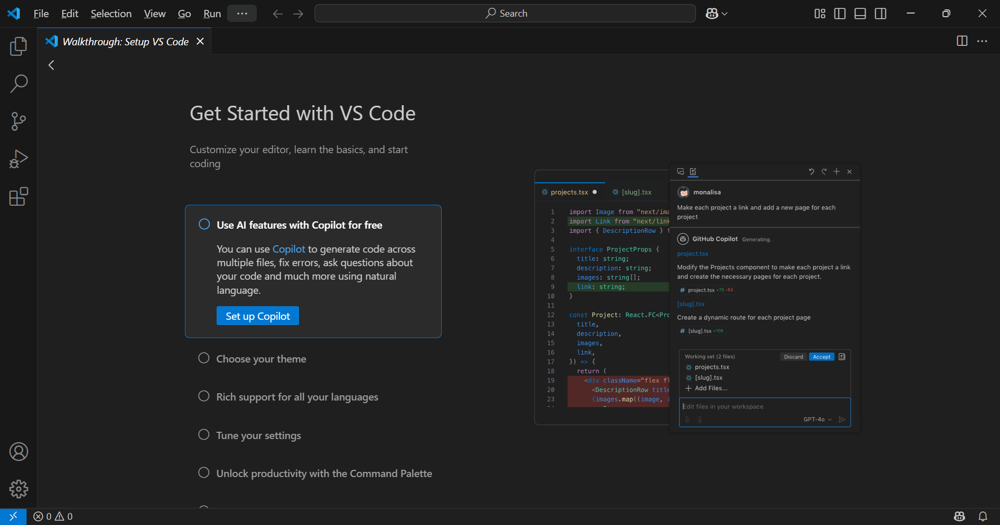
Voit tutustua Visual Studio Coden toimintaan Get started with VS Code -otsikon alta löytyvät opastuksen avulla.
-
Nyt Visual Studio Code on asennettuna ja valmiina käyttöön. Perehdymme sen käyttöön hieman myöhemmin, ennen sitä tutustumme HTML-kielen perusteisiin.
HTML-kielen termistöä
Elementit
HTML-merkkauksessa keskeinen käsite on elementti. Elementiksi kutsutaan kokonaisuutta, jossa on aloitustagi, sisältö ja lopetustagi. Aloitustagi aloittaa kokonaisuuden ja lopetustagi puolestaan päättää sen. Kaikki mitä jää aloitus- ja lopetustagin väliin kutsutaan (elementin) sisällöksi.
Aloitustagin tunnistaa siitä, että se on sana tai lyhenne, joka on sijoitettu <>-merkkien sisälle. Esimerkiksi <p> on yksi yleinen aloitustagi. Lopetustagin tunnistaa siitä, että se on samanlainen kuin aloitustagi, mutta sanan tai lyhenteen edessä on /-merkki. Edellä olevan aloitustagin lopetustagi on </p>.
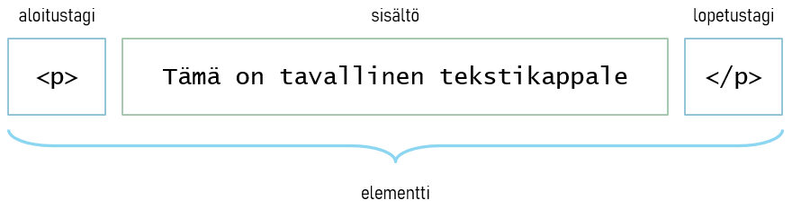
Sisäkkäiset elementit
Elementtejä voidaan laittaa myös sisäkkäin. Seuraavassa esimerkkikoodissa p-elementti on sijoitettu div-elementin sisälle. Huomaa, että elementit päätetään aina sisemmästä elementistä lähtien. Toisin sanoen alla olevassa esimerkissä </p>-lopetustagi tulee olla ennen </div>-lopetustagia.
<div>
<p>Tämä on tekstikappale.</p>
</div>
Todellisuudessa HTML-dokumentti muodostuu sisäkkäisistä elementeistä. Alla on typistetty HTML-dokumentin rakenne, josta näkee miten HTML-dokumentti päätasolla rakentuu.
<html>
<head>
<title>Sivun otsikko</title>
</head>
<body>
<p>Tämä on tekstikappale.</p>
</body>
</html>
HTML-dokumentti koostuu kahdesta päätason elementistä: head ja body. head-elementti sisältää HTML-sivua kuvaavia tietoja, jotka eivät suoraan näy selainsivulla. Tällainen tieto on esimerkiksi selaimen välilehdellä näkyvä sivun otsikko. body-elementti sisältää HTML-sivun näkyvän sisällön.
Huomaa, että HTML-dokumentti voi sisältää ainoastaan yhden html, head ja body-elementin.
Tämän materiaalin HTML-esimerkeissä on käytetty sisennyksiä, jotta merkkaus olisi luettavampaa. Nämä sisennykset eivät ole pakollisia HTML-merkkauksen toiminnan kannalta, sivu toimii samalla tavalla ilman niitäkin.
Esimerkiksi seuraavat kaksi merkkaustapaa ovat toiminnaltaan täysin identtiset.
<div> <p>Tämä on tekstikappale.</p> </div><div><p>Tämä on tekstikappale.</p></div>Näistä tavoista ensimmäinen on luettavampi ja helpommin muokattava. Tästä syystä on suositeltavaa opetella HTML-merkkauksen looginen sisentäminen heti alusta alkaen.
Määritteet
HTML-elementtiä voidaan tarkentaa määritteillä (attribuuteilla). Ne sijoitetaan aina elementin aloitustagiin. Määrite muodostuu nimi- ja arvoparista. Määritteen nimi ja arvo erotetaan toisistaan =-merkillä.
Alla olevassa esimerkissä a-elementille on määritetty href-määrite. Siinä href on määritteen nimi ja "https://www.yle.fi" on sen arvo. Yleissääntö on, että arvo on aina lainausmerkkien sisällä.
<a href="https://www.yle.fi">Ylen kotisivut</a>
Malttamattomille tiedoksi,
a-elementti (anchor) muodostaa hyperlinkin sivulle. Linkkiä klikkaamalla avautuuhref-määritteessä oleva URL-osoite.
Tulevissa esimerkeissä huomaat, että elementit voivat sisältää useampia tarkentavia määritteitä.
Tyhjä elementti
HTML-elementti voi olla myös niin sanottu tyhjä elementti. Tyhjässä elementissä sisältö ja loptustagi puuttuvat eli sillä on vain aloitustagi. Seuraavassa on esimerkki tyhjästä elementistä, sillä on vain aloitustagi, jossa on määritelty elementille kaksi määritettä src ja alt.
<img src="kuvakansio/kuva.jpg" alt="kuvateksti">
img (image) on tyhjä elementti, jolla sivulle sijoitetaan kuva. Sijoitettavan kuvan osoite määritellään src-määritteellä ja kuvan vaihtoehtoinen kuvateksti määritellään alt-määritteellä. Tässä tapauksessa elementillä ei ole tarvetta sisällölle, joten siksi sillä ei ole sisältöosaa eikä lopetustagia.
Huomaa, että elementillä voi olla monia määritteitä, joista osa on pakollisia ja osa vapaaehtoisia. Esimerkiksi
srcjaaltovat kummatkinimg-elementin pakollisia määritteitä.
Merkkauksessa sisältö on keskiössä
HTML-elementeillä merkataan dokumentin merkityksellistä sisältöä (semantiikkaa), ei sen ulkoasua. Tilanteessa käytettävä HTML-elementti valitaan sen merkityksen perusteella, ei sen ulkoasun perusteella.
Esimerkiksi seuraavassa merkkauksessa h1-elementillä kerrotaan tekstin olevan ensimmäisen tason otsikko eli sivun pääotsikko. Jos tätä elementtiä käytettäisiin ulkoasullisessa merkityksessä eli kun teksti halutaan näyttämään todella isona, niin silloin esimerkiksi ääneen lukevat selaimet korostavat tekstin väärällä tavalla.
<h1>Tämä on sivun pääotsikko</h1>
Yleisimmät HTML-elementit
Alla olevassa taulukossa on HTML-kielen yleisimmin käytetyt elementit. Näiden elementtien avulla saa toteutettua täysin toimivan HTML-sivun.
| elementti | merkitys |
|---|---|
h1, … h6 | otsikko |
p | tekstikappale |
img | kuva |
ul | (pallukka)lista |
li | lista-alkio |
divja span | kääre-elementit |
Tutustutaan seuraavaksi näiden elementtien käyttöön esimerkkien avulla.
Otsikko (h1, … h6)
Otsikkotason elementeillä merkitään dokumentin otsikot. Sivun pääotsikko merkitään h1-elementillä, sen alaotsikot h2-elementeillä ja niin edelleen.
<h1>Tämä on sivun pääotsikko</h1>
Otsikkoelementit näkyvät tyypillisesti lihavoituna ja isommalla tekstikoolla. Niiden ulkoasu muokataan halutunlaiseksi CSS-tyyleillä.
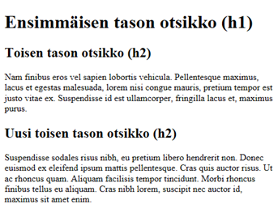
Muistisääntö:
h1, …h6-elementtien nimet ovat lyhenne sanasta header.
Tekstikappale (p)
Tavallinen tekstikappale merkitään p-elementillä.
<p>Suspendisse solades risus nibh, eu pretium…</p>
Tekstikappale näkyy tyypillisesti normaalilla tekstikoolla. Sen ylä- ja alapuolella on pieni väli erottamassa sitä muusta sisällöistä.
Muistisääntö:
p-elementin nimi on lyhenne sanasta paragraph.
Kuva (img)
Kuva merkitään img-elementillä. img on tyhjä elementti (eli sillä ei ole sisältöä eikä lopetustagia). Kuvan osoite määritellään src-määritteellä ja kuvan vaihtoehtoinen teksti alt-määritteellä.
<img src="https://placehold.co/500x350" alt="">
Kuva näkyy tyypillisesti sen luonnollisessa koossa, kuvan kokoa muokataan CSS-tyyleillä.
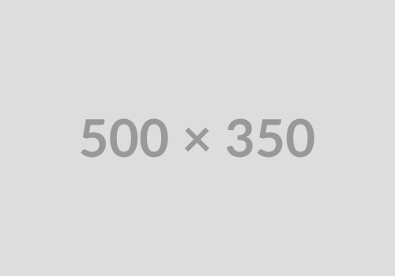
Muistisääntö:
img-elementin nimi on lyhenne sanasta image.
Linkki (a)
Linkki toiselle sivulle tai saman sivun toiseen kohtaan merkitään a-elementillä.Linkin osoite määritellään href-määritteellä ja elementin sisällöksi tulee linkkiteksti.
<a href="https://sasky.fi">SASKY koulutuskuntayhtymä</a>
Linkki näkyy tyypillisesti alleviivattuna tekstinä. Linkin väri on sininen (linkkiä ei ole vielä avattu) tai violetti (linkki on avattu).
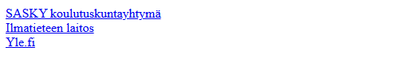
Muistisääntö:
a-elementin nimi on lyhenne sanasta anchor.
Lista (ul ja li)
Lista merkataan ul-elementillä, sen sisällöksi tulee kukin kohta omana li-elementtinään.
<ul>
<li>aloitustagi</li>
<li>sisältö</li>
<li>lopetustagi</li>
</ul>
Listan alkioiden alussa on tyypillisesti pallukka, siksi tätä listaa kutsutaan yleisesti pallukkalistaksi, vaikka sen virallinen nimi on järjestämätön lista.
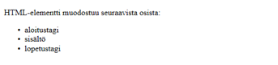
Listan ulkoasua muokataan CSS-tyylien avulla. Sivujen navigointilinkit toteutetaan usein tällä elementtirakenteella.
Muistisääntö:
ul-elementin nimi on lyhenne sanoista unordered list jali-elementin nimi on lyhenne sanoista list item.Listasta on olemassa variantti, jossa alkiot on numeroitu. Tätä kutsutaan järjestetyksi listaksi eli ordered list. Se merkataan
ol-elementillä ihan samalla tavalla kuinul-lista.
Lohko- ja sisätason elementit
Suurin osa HTML-kielen elementeistä kuuluvat joko lohkotason tai sisätason elementteihin. Niiden oleellinen ero on siinä, miten ne käyttäytyvät sivulle tulostettaessa.
Lohkotason elementit (block-level element) alkavat aina uuden rivin alusta ja niiden jälkeen tulee rivinvaihto eli niiden perään ei tule enää muuta sisältöä. Esimerkiksi otsikot (h1, … h6), tekstikappale (p) ja lista (ul) ovat lohkotason elementtejä.
Sisätason elementit (inline element) puolestaan eivät ala automaattisesti uuden rivin alusta ja ne eivät päätä riviä. Toisin sanoen ne voivat sijaita keskellä tekstiä. Sisätason elementtejä ovat muun muassa linkki (a) ja kuva (img)
Kääreet (div ja span)
div- ja span-elementit eroavat muista edellä esitellyistä elementeistä. Niillä ei ole sisältömerkitystä eikä myöskään ulkoasumerkitystä. Ne ovat toisin sanoen
eräänlaisia ”näkymättömiä” kehyksiä eli kääreitä.
<div>
div ja <span>span</span> ovat kääreitä.
</div>
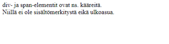
Niitä käytetään silloin, kun halutaan määritellä ulkoasutyylejä isommalle kokonaisuudelle, jolle ei ole olemassa omaa loogista elementtiä.
div on lohkotason elementti ja span on sisätason elementti.
Minkä elementin valitsen?
Valitse elementti aluksi edellä olevista sen perusteella, mikä on sen lähin sisältömerkitys. Kun nämä ovat tulleet tutuiksi, niin voit ottaa htmlreference.io-sivustolta esiteltyjä elementtejä mukaan käyttämiisi elementteihin.
HTML-dokumentti
HTML-dokumentilla on selkeä ja tarkasti määritelty rakenne. Alla on yksinkertaisen HTML5-dokumentin peruspohja.
<!DOCTYPE html>
<html lang="fi">
<head>
<meta charset="UTF-8">
<title>Sivun otsikko</title>
</head>
<body>
<h1>Sivun otsikko</h1>
<p>Tämä on tekstikappale.</p>
</body>
</html>
<!DOCTYPE html>
Dokumentti alkaa aina dokumenttityypillä (DOCTYPE). Se määrittelee, mitä HTML-suositusta dokumentti noudattaa. Dokumenttityyppi on tärkeä määritellä, koska sen perusteella selaimet tulkitsevat dokumentin merkkausta. Vuosien saatossa HTML:stä on tullut useita suosituksia, joista jokaisella on oma dokumenttityyppinsä.
Aikaisemmissa suosituksissa dokumenttityyppien määrittelyt olivat pitkiä tekstipätkiä. HTML5-suosituksen myötä dokumenttityyppi typistettiin lyhyeksi ja ytimekkääksi.
<html lang="fi">
html-elementti aloittaa koko HTML-dokumentin eli se määrittelee koko dokumentin juuren.
Elementin aloitustagiin on hyvä sijoittaa myös lang-määrite, jolla kerrotaan millä kielellä dokumentin sisältö on esitetty. Tätä tietoa hyödyntävät mm. puhesyntetisoijat ja erilaiset käännöstyökalut. Arvo määritellään kielikoodilla, esimerkiksi fi (suomi), en (englanti) ja sv (ruotsi). Dokumentti voi sisältää ainoastaan yhden html-elementti.
<head>
head-elementti sisältää HTML-dokumentin metadatan eli sen tiedon, joka ei suoraan
näy sivulla. Sinne sijoitetaan paljon erilaista tietoa sivusta, kuten esimerkiksi sivun merkistökoodauksesta sekä sivulle linkitetyt tyylimäärite- ja skriptitiedostot. Dokumentti voi sisältää ainoastaan yhden head-elementin.
<meta charset="UTF-8">
meta-elementti määrittelee HTML-dokumentin metatietoa, kuten sivun merkistökoodauksen, kuvauksen, avainsanat, tekijät ja selainikkunan määritykset.
Yleisin meta-elementti on sivun merkistökoodauksen määrittely. HTML5 suosittelee sivun koodaamista UTF-8 –merkistökoodauksella, koska sillä saadaan kattava merkistötuki kohtuullisella tilankulutuksella. Tällöin sivu tallennetaan tekstieditorissa UTF-8 -muodossa ja käytetty merkistökoodaus kerrotaan meta-tagissa.
<title>
title-elementti määrittelee HTML-dokumentin nimen tai otsikon, joka tyypillisesti näkyy selaimen välilehden tekstinä tai tallennetun kirjanmerkin tekstinä.
Huomaa, että dokumentin nimi on usein eri kuin sivun ensimmäinen otsikko, sillä otsikko on usein kiinteä osa sivun kokonaisuutta ja usein se ei toimi dokumentin nimenä. Dokumentti voi sisältää ainoastaan yhden title-elementin.
<body>
body-elementti sisältää HTML-dokumentin oleellisimman osuuden eli itse sisällön. Sille voi määritellä myös yhteisiä elementtimääritteitä, kuten lang, class ja id. Huomaa, että dokumentilla voi olla ainoastaan yksi body-elementti.
Ensimmäinen HTML-sivu
Nyt HTML-kielen käsitteet ja peruselementit ovat tuttuja. Seuraavaksi kääritään hihat ja luodaan ihan ensimmäinen HTML-sivu ja katsotaan, miltä se näyttää selaimessa.
Projektikansion luominen
Kaikki tässä materiaalissa tehtävät tiedostot kannattaa tallentaa samaan sijaintiin, jotta niiden löytäminen on myöhemmin helpompaa. Sitä varten luomme ensin tätä materiaalia varten oman "projektikansion", jota tulemme käyttämään jatkossa.
Tässä ohjeessa neuvotaan, miten projektikansio luodaan Windows-käyttöjärjestelmällä. Jos sinulla on jokin toinen käyttöjärjestelmä käytössä, niin sovella ohjeita. Perusperiaate on sama kaikissa käyttöjärjestelmissä.
-
Käynnistä Windowsin Resurssienhallinta klikkaamalla sen kuvaketta alareunan tehtäväpalkista.
-
Valitse vasemman reunan siirtymisruudusta Tiedostot-vaihtoehto (Documents).
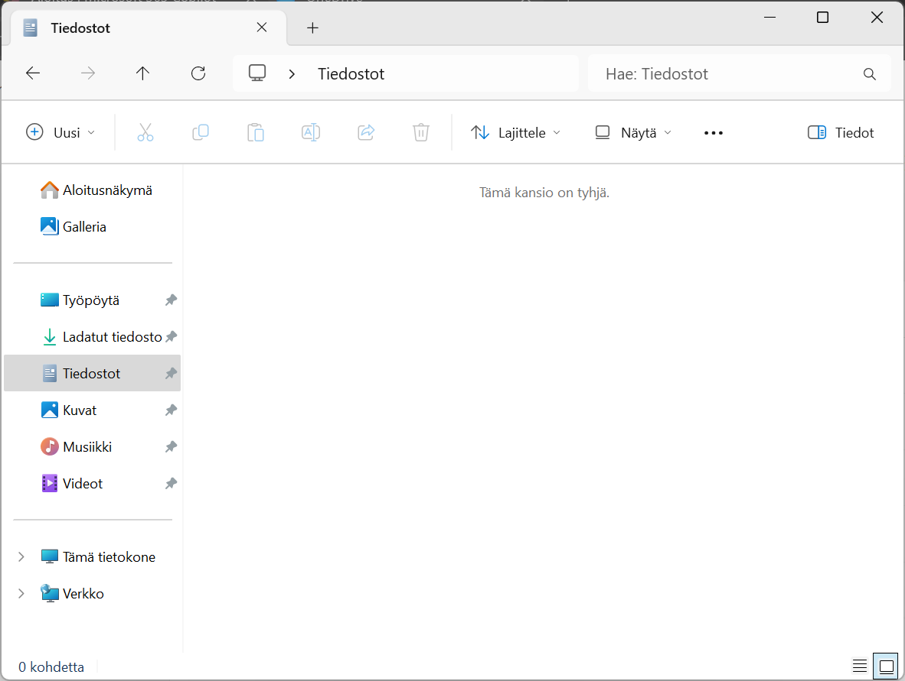
-
Valitse yläreunan valikosta Uusi ja sen alta avautuvasta valikosta Kansio.
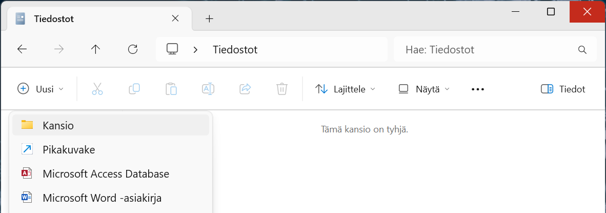
-
Anna uuden kansio nimeksi
koodaajasivut.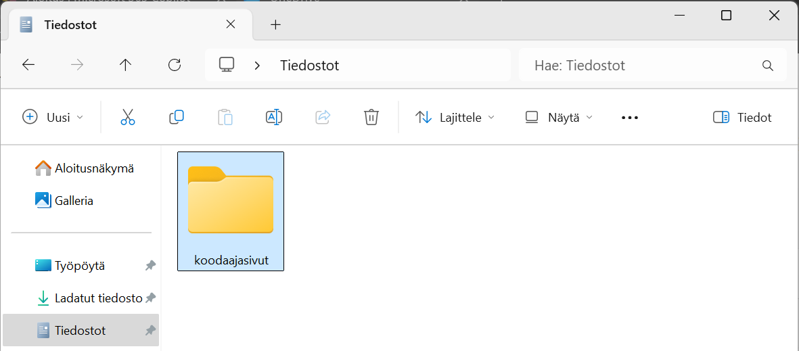
Nyt sinulla on uusi projektikansio luotuna omalle koneellesi, tätä kansiota käytämme jatkossa uusien tiedostojen tallennuspaikkana.
Voit halutessasi jatkossa sijoittaa tiedostot omaan, itse määrittelemääsi kansioon. Myöhemmissä vaiheissa tehtävät tiedostot toimivat samalla tavalla, sijaitsevat ne missä tahansa. Muista kuitenkin soveltaa ohjeistusta aina silloin, kun ohjeistuksessa tallennetaan tai avataan tiedostoa.
Projektikansion avaaminen Visual Studio Codessa
Seuraavaksi avaamme edellä luomamme projektikansion Visual Studio Codessa. Seuraavat ohjeet toimivat sellaisenaan, vaikka olisit asennuksen jälkeen tutustunut Get Started with VS Code -tutoriaaliin.
-
Avaa Visual Studio Code.
-
Valitse File-valikon alta Open Folder….
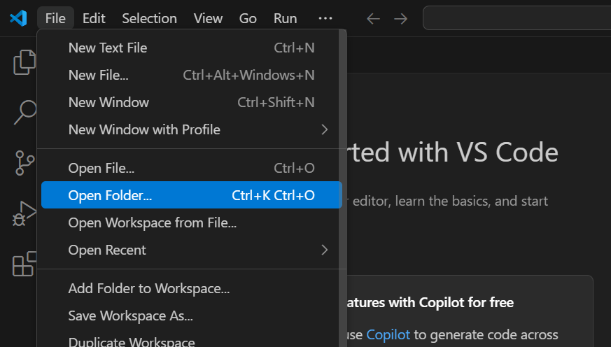
-
Valitse avautuvan ikkunan vasemmasta reunasta ensin Tiedostot ja valitse tämän jälkeen koodaajasivut-kansio.
Jos loit kansion eri nimellä tai eri paikkaan, niin etsi ja valitse se tässä kohdassa.
Hyväksy valintasi painamalla Valitse kansio -nappia.
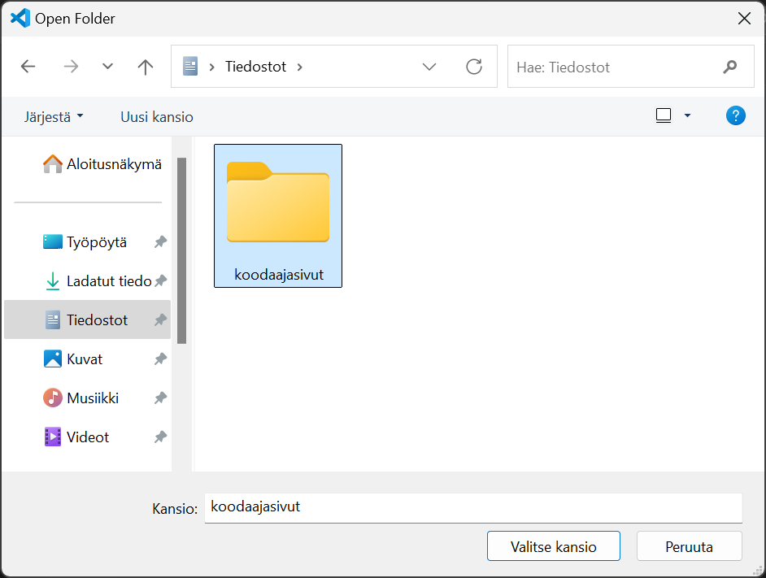
-
Visual Studio Code varmistaa vielä, että luotatko kansiossa olevien tiedostojen tekijöihin. Koska tämä kansio tulee sisältämään sinun itsesi tekemiä tiedostoja, niin voit turvallisesti valita Yes, I trust the authors -vaihtoehdon.
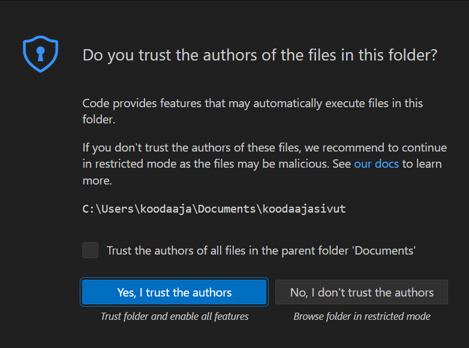
-
Projektikansio on nyt avattu Visual Studio Codessa ja sinne voi nyt alkaa luomaan omia tiedostoja.
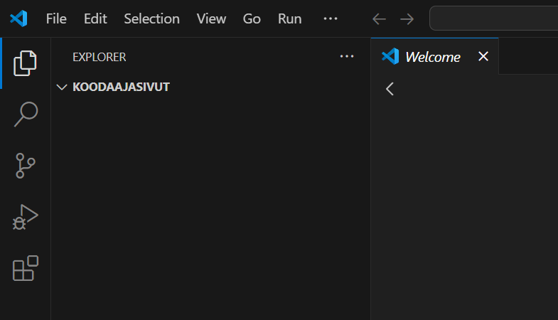
HTML-sivun luominen
Seuraavaksi luomme projektikansioon uuden HTML-sivun.
-
Kopioi seuraava ohjelmakoodi leikepöydälle.
Vinkki: Voit kopioida koko tekstin klikkaamalla koodialueen oikeassa yläkulmassa olevaa kopioitikuvaketta.
<!DOCTYPE html> <html lang="fi"> <head> <meta charset="UTF-8"> <title>Hei koodausmaailma!</title> </head> <body> <h1>Hei koodausmaailma!</h1> <p>Tämä sivu on ensimmäinen askel kohti koodaamisen ihmeellistä maailmaa.</p> </body> </html> -
Klikkaa KOODAAJASIVUT-tekstin vieressä olevaa New File…-kuvaketta.
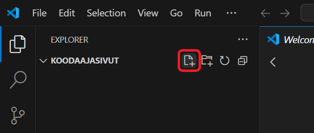
-
Syötä uuden tiedoston nimeksi
01-hello.htmlja paina Enter-näppäintä.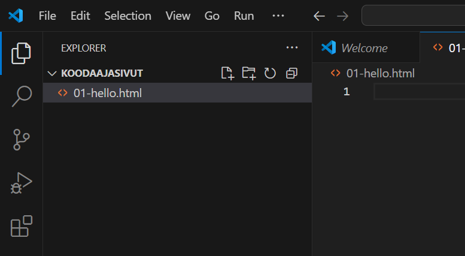
Tämän materiaalin tiedostonimet alkavat numeroilla, jolloin niiden löytäminen jatkossa on helpompaa.
-
Liitä leikepöydälle kopioimasi HTML-koodi editorinäkymään.
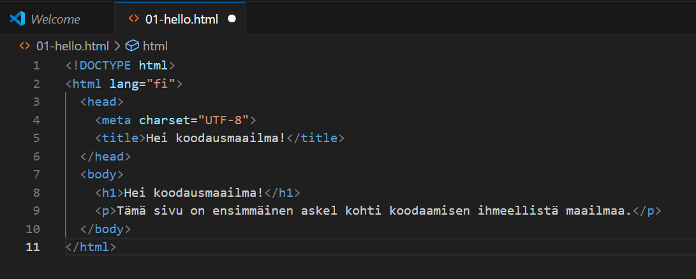
Tiedostonimen perässä on täytetty ympyrä. Se ilmoittaa, että tiedostoa on muokattu edellisen tallennuksen jälkeen.
Tässä vaiheessa kannattaa myös tarkistaa, että VS Coden alapalkissa näkyy, että merkistökoodauksena (encoding) käytetään UTF-8-muotoa.
-
Tallenna tiedosto valitsemalla File-valikosta kohta Save.
Nyt tiedosto on tallennettu levylle. Tämän voi tarkistaa välilehden otsikosta. Tiedostonimen perässä on X-kuvake. Tämä ilmoittaa, että tiedostoon ei ole tehty viimeisimmän tallennuksen jälkeen.
HTML-sivun avaaminen selaimessa
Seuraavaksi voidaan katsoa, miltä sivu näyttää selaimessa.
-
Käynnistä Windowsin Resurssienhallinta klikkaamalla sen kuvaketta alareunan tehtäväpalkista.
-
Valitse vasemman reunan siirtymisruudusta Tiedostot-vaihtoehto (Documents).
-
Avaa koodaajasivut-kansio tuplaklikkaamalla sen kuvaketta.
-
Tuplaklikkaa kansiosta löytyvää 01-hello.html-tiedostoa.
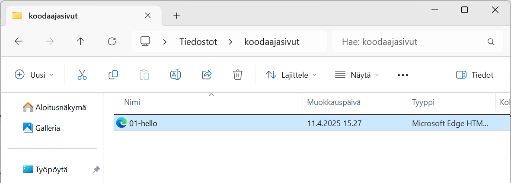
-
HTML-sivu on nyt selaimessa auki.
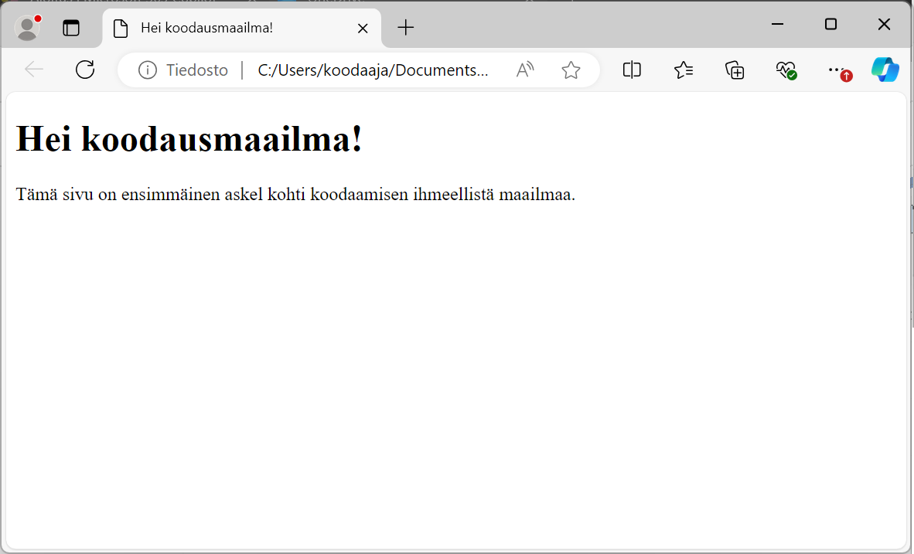
-
Kokeile muuttaa HTML-sivua seuraavasti:
- Muuta HTML-tiedostoa Visual Studio Codessa. Muutos voi olla esimerkiksi p-elementissä olevan tekstin muuttaminen toisenlaiseksi.
- Tallenna tekemäsi muutokset. Tarkista, että tiedostonimen perässä oleva ympyrä muuttuu X-kuvakkeeksi.
- Päivitä selainsivu painamalla F5-näppäintä tai painamalla osoiterivin vasemmalla puolella olevaa päivityskuvaketta.
Nyt osaat luoda projektikansioon uusia tiedostoja ja tiedät, miten pääset katsomaan niitä selaimessa.
JavaScript
Verkossa on runsaasti lähdemateriaalia tarjolla. Hyvä vaihtoehto on esimerkiksi sivusto W3Schools Javascript ja vaihtoehtoisesti vaikka maksutta saatavilla olevaa kirja JavaScript From Zero to Hero (hieman nurinkurisesti vasta luku 4 käsittelee alkeita, hyppää siis neljänteen lukuun). Linkki on toisinaan hyvin hidas, ole siis kärsivällinen.
Erinomainen tietolähde on myös ohjelmistokehittäjien yhteisö Stack Overflow, jossa hakutoiminnon avulla voi etsiä vastauksia kysymyksiin ja jos kyseisestä asiasta ei löydy tietoja, voi lisätä oman kysymyksen. Vastaava ja kenties vielä suositumpi on Stack Exchange, johon kannattaa myös tutustua.
Tämän materiaalin tavoite
Tämä itseopiskelumateriaali tarjaa vain välttämättömimmän sisällön ohjelmoinnin perusteisiin, jotta opiskelija pääsee omatoimisesti alkuun. Jos et ole aiemmin koodannut, sinun pitää alkuvaiheessa sietää sitä epävarmuuden tunnetta, että et vielä tiedä tarpeeksi. Jostain pitää aloittaa ja lähteä hitaasti etenemään ja tämän materiaalin puitteissa sivuutamme paljon erilaisia hienouksia tai oikopolkuja ja keskitymme pedagogisesti selkeimpiin koodiratkaisuihin. Vähä vähältä uutta tietoa ja uusia taitoja alkaa kertyä.
Älä huoli, vaikka JavaScript tuntuisi aluksi vaikealta – kaikki osaajat ovat joskus olleet samassa tilanteessa. Jokainen pieni askel vie sinua eteenpäin, ja pian huomaat ymmärtäväsi yhä enemmän. Ole utelias, kokeile rohkeasti ja muista: virheet ovat paras tapa oppia. Tämä on alku matkallesi luomaan omia verkkosovelluksia – ja se on aika siisti juttu!
Jos haluat käyttää tekoälyä hyväksesi, käytä sitä kuin se olisi opettaja: tee tekoälylle kysymyksiä, jotka alkavat sanalla "miksi":
- miksi tästä rivistä tulee syntax error
- miksi lauseeni ei tulosta mitään
- miksi saan virheilmoituksen 'unexpected token else'
Tällöin oma osaaminen karttuu nopeasti. Huonoin vaihtoehto on (ja tällä kurssilla se ei ole sallittu!) pyytää tekoälyä ratkaisemaan tehtäviä sinun puolestasi. Tällöin omaa oppimista ei tapahdu lainkaan.
Ohjelmoinnin peruskäsitteet
Ohjelmointi on tapa antaa tietokoneelle tarkkoja ohjeita siitä, mitä sen tulee tehdä. Ohjelmat koostuvat yksittäisistä käskyistä, jotka suoritetaan yksi kerrallaan ennalta määrätyssä järjestyksessä. Näiden käskyjen avulla tietokone voi käsitellä tietoa, ratkaista ongelmia, suorittaa toistuvia tehtäviä ja reagoida käyttäjän toimintaan. Ohjelmointi on eräänlaista viestintää ihmisen ja koneen välillä, mutta kone ymmärtää vain tarkasti määriteltyä kieltä – ohjelmointikieltä. Tämän vuoksi ohjelmointi vaatii loogista ajattelua ja huolellista ohjeiden laatimista.
Useimpien ohjelmien perusrakenne noudattaa samaa yksinkertaista periaatetta: tietoja otetaan vastaan, niitä käsitellään, ja lopuksi tulokset näytetään käyttäjälle tai tallennetaan jonnekin. Näitä kolmea osaa kutsutaan nimillä syöte, prosessointi ja tuloste. Tämä kolmijako auttaa hahmottamaan ohjelman kulun ja sen, miten eri osat liittyvät toisiinsa.
Syöte eli input
Syöte tarkoittaa tietoa, jota ohjelma saa ulkopuolelta. Tämä tieto voi tulla esimerkiksi käyttäjältä, joka kirjoittaa jotain näytölle ilmestyvään tekstikenttään, tai se voi olla tiedostossa oleva tieto, jonka ohjelma lukee automaattisesti. Ilman syötettä ohjelma toimisi aina samalla tavalla eikä voisi reagoida tilanteisiin tai käyttäjän tarpeisiin.
Käsittely eli prosessointi
Kun tiedot on saatu syötteenä, ohjelma siirtyy seuraavaan vaiheeseen: käsittelyyn eli prosessointiin. Tässä vaiheessa ohjelma tekee varsinaisen työnsä. Se voi laskea, vertailla, muuntaa tai muuten käsitellä syötetietoja logiikan mukaisesti. Prosessointi on ohjelman ydin – siinä tapahtuu se, mitä varten ohjelma on kirjoitettu. Esimerkiksi laskinohjelmassa tämä vaihe tarkoittaa laskutoimituksen suorittamista käyttäjän syöttämien lukujen perusteella.
Tulostus eli output
Kun tiedot on käsitelty, ohjelma siirtyy viimeiseen vaiheeseen eli tulostukseen. Tällöin ohjelma antaa käyttäjälle jotain näkyvää palautetta – esimerkiksi näyttää laskutoimituksen tuloksen, piirtää kuvaajan tai tallentaa tuloksen tiedostoon. Tuloste on ohjelman tapa kertoa, mitä tapahtui. Se voi olla yhtä yksinkertainen kuin teksti "Valmis!" ruudulla, tai monimutkaisempi esitys tuloksista, esimerkiksi tilasto tai raportti.
Yhteenvetona voi sanoa, että ohjelma on joukko ohjeita, joiden avulla tietokone osaa ottaa vastaan tietoa, käsitellä sen halutulla tavalla ja näyttää tai tallentaa tulokset. Tämä kolmiosainen rakenne – syöte, prosessointi ja tuloste – on läsnä melkein jokaisessa ohjelmassa, yksinkertaisimmista laskimista monimutkaisiin verkkosovelluksiin. Ohjelmointi on siis ennen kaikkea järjestelmällistä ongelmanratkaisua, jossa kone tekee työn, mutta ihminen määrittää säännöt.
Koodilause
Koodilause on ohjelmointikielessä yksi yksittäinen käsky tai toimenpide, jonka tietokone suorittaa. Jokainen koodilause kertoo tietokoneelle, mitä se tekee seuraavaksi – esimerkiksi luo muuttujan, laskee jotain, näyttää tietoa tai muuttaa tietoa. Lauseita suoritetaan yleensä ylhäältä alas, yksi kerrallaan, siinä järjestyksessä kuin ne on kirjoitettu.
Koodilause muistuttaa tavallisen kielen virkettä: siinä on aina jokin toiminto ja usein myös kohde, johon toiminto kohdistuu. Esimerkiksi lause "Anna Maijalle omena" kertoo, kuka saa mitä. Vastaavasti ohjelmointikielen lause voi sanoa: "laske yhteen nämä luvut ja tallenna tulos".
Miten testaan nopeasti JavaScript-lauseen?
Klikkaa yllä olevaa kuvaa nähdäksesi videon.
Muutamia esimerkkejä JavaScriptin koodilauseista:
let nimi = "Anna"
Tämä lause luo muuttujan nimeltä nimi ja tallentaa siihen tekstin "Anna".
let summa = 5 + 3
Tässä lasketaan yhteen luvut 5 ja 3, ja tulos (eli 8) tallennetaan muuttujaan summa.
console.log("Hei maailma!")
Tämä lause näyttää tekstin selaimen konsolissa. Konsoliin tulostaminen on yleinen tapa tarkistaa, mitä ohjelma tekee.
luku++
Tämä lause kasvattaa yhdellä kokonaisluvun sisältävää muuttujaa nimeltä luku. Se on lyhyempi tapa kirjoittaa luku = luku + 1.
Jokainen näistä esimerkeistä on yksi itsenäinen koodilause. Ohjelma koostuu useista tällaisista lauseista, jotka muodostavat yhdessä toimivan kokonaisuuden. Aivan aluksi tärkeää on oppia lukemaan ja kirjoittamaan näitä lauseita selkeästi ja loogisesti.
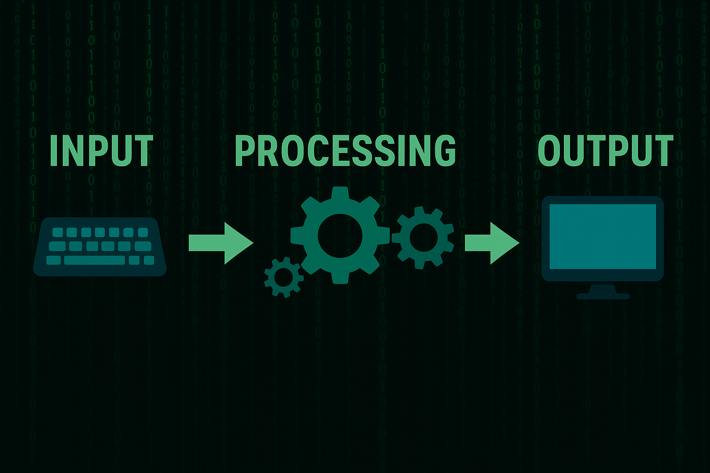
JavaScriptin perusteet – Muuttujat ja tietotyypit
Muuttujat
Muuttujat ovat säilytyspaikkoja arvoille eli datalle. Ne mahdollistavat sen, että koodisi voi käsitellä vaihtelevaa tietoa – kuten käyttäjän nimeä tai laskun summaa. Tieto pysyy muuttujassa tallessa koko ohjelman suorituksen ajan.
Ohjelmoija voi halutessaan muuttaa muuttujan arvoja ohjelman suorituksen aikana vaikka monta kertaa, esimerkiksi pelissä voi pelaajan pistemäärä olla tallennettuna muuttujaan ja aina kun pelaaja onnistuu jossain uudessa asiassa, hänen piste-muuttujansa arvoa kasvatetaan.
Muuttuja esitellään ennen sen ensimmäistä käyttöä varatulla komentosanalla let. Koodi toimii valitettavasti myös, vaikka let-komennon jättää pois, mutta tällöin muuttujasta tulee vahingossa ns. globaali. Muista siis esitellä aina muuttuja oikealla tavalla.
JavaScriptin koodilause päättyy joko rivinvaihtoon (ENTER) tai puolipisteeseen. Nykytavan mukaan puolipisteitä ei enää käytetä, mutta niiden käyttö ei ole virhe. Alla olevat kaksi koodilausetta päättyvät puolipisteeseen.
let nimi = "Anna";
let ika = 16;
Seuraavat koodirivit päättyvät rivinvaihtoon ilman puolipistettä. Huomaa, desimaalierotin on desimaalipiste eikä suomen kielen kieliopin mukainen pilkku. Kolmannella rivillä hinta-muuttujaan tallennetaan uusi arvo, joka korvaa vanhan. Vain viimeisin arvo jää jäljelle. Myöskään muuttujaa ei kolmannella rivillä enää uudelleen esitellä, koska se on let-komennolla esitelty jo aiemmin.
let hinta = 5.95
let alePros = 0.2
hinta = 4.76
Muistettavaa muuttujista:
- Käytä kuvaavia nimiä (ika, etunimi) – ei pelkkiä kirjaimia (x, y).
- Muuttujan nimi ei saa sisältää välilyöntejä.
- Vältä muuttujien nimeämisessä skandinaavisia kirjaimia, osa työkaluista tai kirjastoista voi toimia väärin
- Käytä camelCase-tyyliä: esim.
kokoNimitai alaviivoja esim.ale_prosenttikun muuttujan nimi on pitkä yhdyssana.
1.2 Yksinkertaiset tietotyypit (primitiiivit)
Muuttujille voi antaa eri tyyppisiä arvoja. JavaScript tunnistaa tyypin automaattisesti.
Tärkeimmät tietotyypit:
| Tyyppi | Esimerkki | Selitys |
|---|---|---|
| String | "Moikka" | Teksti (merkkijono) |
| Number | 42, 3.14 | Luku (kokonais- tai desimaali) |
| Boolean | true, false | Totuusarvo (kyllä/ei) |
| Undefined | muuttuja ilman arvoa | Esim. let x |
| Null | null | Tarkoituksella "tyhjä" |
let teksti = "Hei"
let luku = 100
let totuus = true
let eiMaaritetty
let tyhja = null
Tekstin kirjoitus
Koska tekstimuotoinen data voi sisältää kaikkia merkkejä, myös välilyöntejä ja erikoismerkkejä, tekstimuotoinen data on ympäröitävä erotinmerkeillä, joita on kolmea tyyppiä. Voit käyttää tekstiin heittomerkkejä eli 'hipsuja', lainausmerkkejä tai backtick-merkkejä:
let eka = 'Hei'
let toka = "Moi"
// tämä on kommentti
let kolmas = `Terve, ${eka}` // muuttujan upotus tulostukseen
Kommentit ja "kaltevat" viivat
Koodin joukkoon voi lisätä yllä olevan esimerkin mukaan kommentteja, eli ohjelmoijan omia muistiinpanoja. Ne eivät vaikuta ohjelman toimintaan vaan ovat pelkästään ihmisen luettavaksi tarkoitettuja huomautuksia tai vastaavaa. Kommentti aloitetaan kirjoittamalla peräkkäin kaksi kauttaviivaa // tämä on kommentti. Kauttaviivat ovat eri merkki, kuin seuraavassa esiteltävät kenoviivat, jotka osoittavat ikään kuin kello 11:een, kun taas kauttaviivat osoittavat kello 1:een.
Muista: kauttaviiva / ja kenoviiva \ ovat eri merkki ja saavat aikaan eri toimintoja. Seuraavaksi eräs kenoviivan käyttötarkoitus, eli escape-merkit.
Escape-merkit ovat erikoismerkkejä, joita käytetään ohjelmoinnissa, kun halutaan lisätä koodiin merkkejä, joita ei voi kirjoittaa suoraan sellaisenaan. Näitä merkkejä tarvitaan, koska jotkut merkit JavaScriptissä (ja muissa kielissä) tulkitaan erikoistarkoitukseen, eikä niitä voi käyttää normaalina tekstinä ilman erityistä käsittelyä.
Escape-merkki on kenoviiva \, jota seuraa jokin muu merkki. Tämä yhdistelmä kertoo JavaScriptille: "älä käsittele seuraavaa merkkiä tavalliseen tapaan, vaan tulkitse se erikoismerkkinä".
Muutama Escape-merkki:
- \' ja \" sallivat kirjoittaa lainausmerkin osaksi merkkijonoa
- \n tekee rivinvaihdon
- \\ lisää kenoviivan
Esimerkki merkkijonosta, joka sisältää Escape-merkkejä:
let eka = "Täällä on kenoviiva \\ ja lainausmerkki \" tekstin joukossa."
Ylläolevan muuttujan tulostus tuottaa tällaisen rivin:
Täällä on kenoviiva \ ja lainausmerkki " tekstin joukossa.
Kun haluat tulostaa tekstin kahdelle riville, lisää haluamaasi kohtaan \n.
let esimerkki = "Hei, mitä kuuluu?\nKaikki hyvin."
Tietotyypin tarkistus
Voit tarkistaa muuttujan tietotyypin komennolla typeof.
let luku = 10
console.log(typeof luku) // "number"
Tyyppimuunnokset
JavaScript muuntaa joskus tyyppejä automaattisesti. Tämä voi yllättää:
let a = 2
let b = "2"
console.log(a + b) // "22" (yhdistää tekstiksi)
Voit myös muuntaa tyyppejä itse:
Number("123") // 123
String(456) // "456"
Boolean("") // false
Yhteenveto
- Käytä let muuttujien luomiseen.
- Muista tietotyypit: teksti, luku, tosi/epätosi.
- Kirjoita kuvaavia muuttujanimiä.
- Tarkista tyyppi typeof-komennolla.
- Tyyppimuunnokset voivat aiheuttaa yllätyksiä.
Esimerkit
JavaScript-koodi kirjoitetaan HTML-sivulle <script>-elementin sisään. Tämä tarkoittaa, että voit lisätä koodin suoraan HTML-tiedostoon, ja selain suorittaa sen, kun sivu avataan. Kaikki JavaScript kirjoitetaan <script>- ja </script>-tägien väliin. Se voi olla sivun alussa, lopussa tai erillisessä tiedostossa.
Missä kohtaa HTML:ää <script>-elementti voi olla?
<script>-elementti voidaan sijoittaa kahteen yleiseen paikkaan:<head>-elementin sisälle<body>-elementin sisälle
Usein <script> sijoitetaan <body>-elementin sisään ja sen loppuun. Kun selain lukee HTML-tiedostoa ylhäältä alas, se lukee ja suorittaa koodin heti kun se kohtaa sen. Jos JavaScript yritetään suorittaa ennen kuin sivun sisältö on ehtinyt latautua (esimerkiksi ennen kuin elementit kuten <p id="tulos"> ovat olemassa), koodi ei välttämättä toimi oikein – selain ei vielä "näe" niitä elementtejä.
Siksi on hyvä tapa sijoittaa <script>-elementti juuri ennen sivun rungon lopettavaa </body>-tagia,
Alla on muutamia esimerkkejä ja niiden jälkeen harjoituksia, joiden avulla voit itse kokeilla miten koodaaminen onnistuu.
Esimerkki 1
Luo muuttuja nimeltä ilmoitus, jonka arvo on "Tervetuloa koodauskurssille!.
Suoritusohje: Tulosta se alert-ikkunassa. Tee koodistasi kokonainen html-tiedosto ja tallenna se nimellä esimerkki1.html. Avaa luomasi tiedosto selaimessa.
esimerkki1.html:
<!DOCTYPE html>
<html>
<head>
<meta charset="UTF-8">
<title>Esimerkki 1</title>
</head>
<body>
<script>
let ilmoitus = "Tervetuloa koodauskurssille!"
alert(ilmoitus)
</script>
</body>
</html>
Esimerkki 2
Luo muuttuja oppilas, jonka arvo on "Lauri", ja muuttuja pisteet, jonka arvo on 95. Tulosta console.log-komennolla teksti
Oppilas: Lauri, Pisteet: 95
esimerkki2.html:
<!DOCTYPE html>
<html>
<head>
<meta charset="UTF-8">
<title>Esimerkki 2</title>
</head>
<body>
<script>
let oppilas = "Lauri"
let pisteet = 95
console.log("Oppilas: " + oppilas + ", Pisteet: " + pisteet)
</script>
</body>
</html>
Esimerkki 3
Luo muuttuja ekaLuku, jonka arvo on 12, ja tokaLuku, jonka arvo on 8. Laske niiden summa ja näytä se sivulla HTML-elementissä, jonka id on tulos.
<!DOCTYPE html>
<html>
<head>
<meta charset="UTF-8">
<title>Esimerkki 3</title>
</head>
<body>
<p id="tulos"></p>
<script>
let ekaLuku = 12
let tokaLuku = 8
let yhteensa = ekaLuku + tokaLuku
document.getElementById("tulos").innerHTML = "Lukujen yhteissumma on: " + yhteensa
</script>
</body>
</html>
Harjoitukset
Harjoitus 1
Luo muuttuja nimeltä tervehdys, jonka arvo on "Hei maailma!". Tulosta se alert-ikkunassa.
Harjoitus 2
Luo muuttuja nimi, jonka arvo on "Emma", ja muuttuja ika, jonka arvo on 23. Tulosta console.log-komennolla teksti
Nimi: Emma, Ikä: 23
Harjoitus 3
Luo muuttuja luku1, jonka arvo on 5, ja luku2, jonka arvo on 3. Laske niiden summa ja näytä se sivulla HTML-elementissä, jonka id on summa.
Harjoitus 4
Luo muuttuja teksti, jonka arvo on "JavaScript on kivaa" ja näytä se HTML-elementissä, jonka id on viesti.
Harjoitus 5
Luo muuttuja totuus arvolla true ja näytä sen tietotyyppi HTML-elementissä, jonka id on tyyppi.
JavaScriptin perusteet – Operaattorit
Operaattorit ovat symboleita, joilla voidaan tehdä laskutoimituksia ja muokata muuttujien arvoja. Ne ovat ohjelmoinnin perusrakennuspalikoita, aivan kuten matikassa + ja -.
Laskuoperaattorit
Yksi tärkeimmistä operaattoreista on sijoitusoperaattori jota merkitään yhdellä yhtysuuruusmerkillä (=). Se on tavallaan suora määräys tietokoneelle, että sijoita merkin oikealla puolella oleva arvo vasemmalla olevaan muuttujaan. Muista, aina oikealta vasemmalle.
Näitä esimerkkejä oli jo aiemmin, mutta tässä vielä kertauksena:
let nimi
nimi = "Eino"
let ika = 35
JavaScript tukee kaikkia tuttuja peruslaskuja:
Yhteenlasku (+)
- Numeroiden laskemiseen:
let a = 10 + 5 // 15
- Tekstien yhdistämiseen (yhdistely eli katenointi yhdistää merkkijonot):
let tervehdys = "Hei " + "Maija" // "Hei Maija"
Vähennyslasku (-)
- Vähentää luvut normaalisti.
let erotus = 20 - 4 // 16
Kertolasku (*)
- Kertoo kaksi lukua.
let tulo = 6 * 3 // 18
Jakolasku (/)
- Jakaa luvut.
let jako = 30 / 5 // 6
Potenssi (**)
- Korottaa luvun potenssiin.
let potenssi = 2 ** 4 // 16 (eli 2*2*2*2)
Jakojäännös (modulo) (%)
- Palauttaa jakolaskun jakojäännöksen
let jakojaannos = 10 % 3 // 1
Muuttujan arvon muuttaminen
Kasvatus yhdellä (++)
- Lisää muuttujan arvoon yksi:
let luku = 4
luku++ // nyt luku on 5
Vähennys yhdellä (--)
- Vähentää yhdellä:
let luku = 4
luku-- // nyt luku on 3
Toimintojen järjestys
Operaattoreilla on tietty laskujärjestys (kuten matikassa):
- Sulut ()
- Potenssi **
- Kertolasku, jakolasku ja jakojäännös *, /, %
- Yhteen- ja vähennyslasku +, -
Esimerkiksi:
let tulos = (2 + 3) * 4 // tulos on 20, koska sulut lasketaan ensin
Yhteenveto
- Käytä operaattoreita laskemiseen ja tekstin yhdistämiseen.
- + toimii sekä lukujen että tekstin kanssa.
- Modulo (%) kertoo, mitä jää jäljelle jaossa.
- ++ ja -- ovat lyhenteitä yhden lisäämiselle tai vähentämiselle.
- Käytä sulkuja selkeyttämään laskujen järjestystä.
Harjoitukset
Harjoitus 6
Laske kahden luvun summa ja näytä tulos sivulla (innerHTML-tekniikkla)
Harjoitus 7
Vähennä yksi luku toisesta ja tulosta tulos alert-ikkunassa.
Harjoitus 8
Kerro kaksi lukua ja näytä tulos console.log-komennolla.
Harjoitus 9
Laske jakojäännös kahdesta luvusta ja näytä tulos HTML:ssä.
Harjoitus 10
Lisää muuttujaan yksi ja näytä uusi arvo innerHTML:ssä.
Harjoitusten mallivastaukset
<!DOCTYPE html>
<html>
<head>
<meta charset="UTF-8">
<title>Harjoitus 6 – Summa</title>
</head>
<body>
<p id="summa"></p>
<script>
let luku1 = 7
let luku2 = 5
let summa = luku1 + luku2
document.getElementById("summa").innerHTML = "Summa on: " + summa
</script>
</body>
</html>
<!DOCTYPE html>
<html>
<head>
<meta charset="UTF-8">
<title>Harjoitus 7 – Vähennys</title>
</head>
<body>
<script>
let luku1 = 10
let luku2 = 4
let erotus = luku1 - luku2
alert("Erotus on: " + erotus)
</script>
</body>
</html>
<!DOCTYPE html>
<html>
<head>
<meta charset="UTF-8">
<title>Harjoitus 8 – Kertolasku</title>
</head>
<body>
<script>
let luku1 = 6
let luku2 = 3
let tulo = luku1 * luku2
console.log("Tulo on: " + tulo)
</script>
</body>
</html>
<!DOCTYPE html>
<html>
<head>
<meta charset="UTF-8">
<title>Harjoitus 9 – Jakojäännös</title>
</head>
<body>
<p id="mod"></p>
<script>
let luku1 = 13
let luku2 = 5
let jakojaannos = luku1 % luku2
document.getElementById("mod").innerHTML = "Jakojäännös on: " + jakojaannos
</script>
</body>
</html>
<!DOCTYPE html>
<html>
<head>
<meta charset="UTF-8">
<title>Harjoitus 5 – ++ Operaattori</title>
</head>
<body>
<p id="luku"></p>
<script>
let pisteet = 10
pisteet++
document.getElementById("luku").innerHTML = "Pisteet nyt: " + pisteet
</script>
</body>
</html>
Vertailuoperaattorit
JavaScriptissä on operaattoreita, joita käytetään vertaamaan arvoja keskenään. Näitä kutsutaan vertailuoperaattoreiksi (comparison operators).
Vertailun tuloksena saadaan tosi (true) tai epätosi (false) arvo.
Tärkeimmät vertailuoperaattorit
| Operaattori | Selitys | Esimerkki | Tulos |
|---|---|---|---|
| == | Onko arvot yhtäsuuret? | a == 6 | false |
| != | Onko arvot erisuuret? | a != 6 | true |
| > | Onko suurempi kuin? | a > 4 | true |
| < | Onko pienempi kuin? | a < 4 | false |
| >= | Onko suurempi tai yhtä suuri? | a >= 5 | true |
| <= | Onko pienempi tai yhtä suuri? | a <= 4 | false |
Esimerkkejä vertailuista
Alla on kolme yksinkertaista esimerkkiä, jotka voit avata selaimessa ja nähdä tulokset suoraan:
esimerkki4.html
<!DOCTYPE html>
<html>
<head>
<meta charset="UTF-8">
<title>Vertailuoperaattorit – Esimerkki 4</title>
</head>
<body>
<p id="tulos1"></p>
<script>
let a = 5
let vertailu = (a == 5)
document.getElementById("tulos1").innerHTML = "Onko a yhtä kuin 5? " + vertailu
</script>
</body>
</html>
esimerkki5.html
<!DOCTYPE html>
<html>
<head>
<meta charset="UTF-8">
<title>Vertailuoperaattorit – Esimerkki 5</title>
</head>
<body>
<p id="tulos2"></p>
<script>
let a = 5
let vertailu = (a < 4)
document.getElementById("tulos2").innerHTML = "Onko a pienempi kuin 4? " + vertailu
</script>
</body>
</html>
esimerkki6.html
<!DOCTYPE html>
<html>
<head>
<meta charset="UTF-8">
<title>Vertailuoperaattorit – Esimerkki 6</title>
</head>
<body>
<p id="tulos3a"></p>
<p id="tulos3b"></p>
<p id="tulos3c"></p>
<script>
let a = 5
document.getElementById("tulos3a").innerHTML = "a != 6 on " + (a != 6)
document.getElementById("tulos3b").innerHTML = "a >= 5 on " + (a >= 5)
document.getElementById("tulos3c").innerHTML = "a <= 4 on " + (a <= 4)
</script>
</body>
</html>
JavaScriptin perusteet – Ohjausrakenteet ja lohko
Ohjausrakenteet ovat ohjelmoinnissa keinoja hallita, mitä osia koodista suoritetaan ja missä järjestyksessä. Ne mahdollistavat esimerkiksi ehtojen tarkistamisen ja toistuvien toimintojen suorittamisen. Ilman ohjausrakenteita ohjelma suorittaisi koodirivit vain ylhäältä alas, yksi kerrallaan, ilman mahdollisuutta valintoihin tai toistoihin.
Lohko tarkoittaa joukkoa koodirivejä, jotka kuuluvat yhteen. Lohko merkitään JavaScriptissä aaltosulkujen { } sisään. Esimerkiksi if-ehtolauseessa lohko kertoo, mitä tapahtuu, jos ehto toteutuu.
Tyypillisesti eri ohjausrakenteet ovat alla olevan muotoisia:
ohjauskomento (ehto) {
koodilause
koodilause
koodilause
}
Yllä olevassa esimerkissä "ohjauskomento" voisi olla esimerkiksi while tai if. Ohjauskomennon jälkeen on normaalisti suluissa oleva ehto (tai muun tyyppinen lauseke, kuten for-rakenteessa), joka määrää, suoritetaanko kyseinen lohko.
Lohko suoritetaan aina kokonaisuudessaan tai jätetään kokonaan väliin – yksittäisiä lauseita ei hypitä yli. Näin lohko sitoo useamman lauseen yhdeksi ehjäksi kokonaisuudeksi.
Esimerkkejä
if-else (ehtolause):
Alla olevassa if-else-rakenteessa tarkistetaan, onko muuttujan numero arvo suurempi kuin 0. Jos ehto numero > 0 on tosi, suoritetaan lohkossa oleva koodi ja tulostetaan "Luku on positiivinen". Jos ehto ei ole tosi, siirrytään else-haaraan ja tulostetaan "Luku ei ole positiivinen". Tämä rakenne on hyödyllinen silloin, kun halutaan tehdä eri asioita tilanteen mukaan. Ohjelma siis tekee joko/tai -päätöksiä annetun ehdon perusteella.
let numero = 5;
if (numero > 0) {
console.log("Luku on positiivinen");
} else {
console.log("Luku ei ole positiivinen");
}
while (toistolause, kunnes ehto ei enää pidä paikkaansa):
While-rakenteessa ohjelma toistaa lohkon sisällä olevaa koodia niin kauan kuin annettu ehto on tosi. Tässä esimerkissä ehto on i < 3, eli toisto jatkuu niin kauan kuin muuttuja i on pienempi kuin 3. Jokaisella kierroksella tulostetaan "Toisto numero: " ja muuttujan i arvo. Lohkon viimeisellä rivillä i-muuttujaa kasvatetaan yhdellä, jotta toisto lopulta päättyy. Tämä rakenne sopii tilanteisiin, joissa ei välttämättä tiedetä etukäteen montako kertaa toistoa tarvitaan.
let i = 0;
while (i < 3) {
console.log("Toisto numero: " + i);
i++;
}
for (toistolause, jolla toistoa ohjataan laskurimuuttujalla):
For-rakenteessa toisto tapahtuu ennalta määrätyn määrän kertoja. Esimerkissä toisto alkaa, kun muuttuja i on 0, ja jatkuu niin kauan kuin i < 5. Jokaisella kierroksella tulostetaan "Luku: " ja i-muuttujan arvo. Toiston lopussa i kasvaa yhdellä (i++), kunnes se saavuttaa arvon 5 ja ehto ei enää täyty. For-silmukka on kätevä silloin, kun tiedetään tarkalleen, montako kertaa toistoa tarvitaan.
for (let i = 0; i < 5; i++) {
console.log("Luku: " + i);
}
JavaScriptin perusteet – Funktiot
TODO
TODO
Tekijät
Tällä sivustolla oleva materiaali on suunnattu ensisijaisesti SASKYn Koodaaja-koulutuksen hakuvaiheen orientaatiokurssin taustamateriaaliksi. Materiaali on toteutettu niin, että sitä voi käyttää myös itsenäiseen opiskeluun.
Tämän materiaalin on tuottanut Pekka Tapio Aalto ja Peter Forsell. Se on jaettu Creative Commons Nimeä 4.0 Kansainvälinen -lisenssillä.